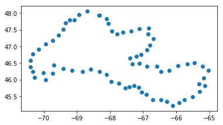
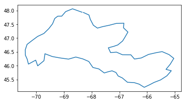
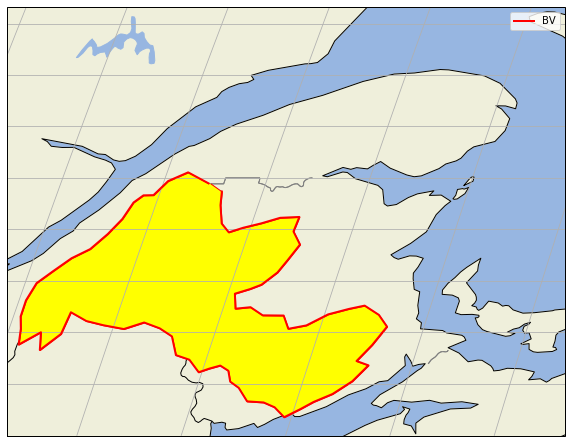
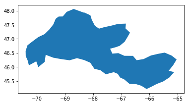
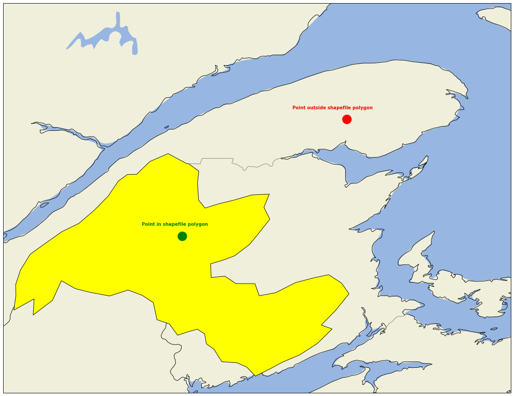

Shapefiles in python

About Vector Data
Vector data are composed of discrete geometric locations (x, y values) known as vertices that define the “shape” of the spatial object.
The organization of the vertices determines the type of vector that you are working with. There are three types of vector data:
-
Points: Each individual point is defined by a single x, y coordinate. There can be many points in a vector point file. 
-
Lines: Lines are composed of many (at least 2) vertices, or points, that are connected. For instance, a road or a stream may be represented by a line. This line is composed of a series of segments, each “bend” in the road or stream represents a vertex that has defined x, y location.

- Polygons: A polygon consists of 3 or more vertices that are connected and “closed”. Thus the outlines of plot boundaries, lakes, oceans, and states or countries are often represented by polygons. Occasionally, a polygon can have a hole in the middle of it (like a doughnut), this is something to be aware of but not an issue you will deal with in this tutorial.

Shapefiles: Points, Lines, and Polygons
Geospatial data in vector format are often stored in a shapefile format. Because the structure of points, lines, and polygons are different, each individual shapefile can only contain one vector type (all points, all lines or all polygons). You will not find a mixture of point, line and polygon objects in a single shapefile.
Objects stored in a shapefile often have a set of associated attributes that describe the data. For example, a line shapefile that contains the locations of streams, might contain the associated stream name, stream “order” and other information about each stream line object.
A shapefile is created by 3 or more files, all of which must retain the same NAME and be stored in the same file directory, in order for you to be able to work with them.
Shapefile Structure
There are 3 key files associated with any and all shapefiles:
- .shp: the file that contains the geometry for all features.
- .shx: the file that indexes the geometry.
- .dbf: the file that stores feature attributes in a tabular format.
Sometimes, a shapefile will have other associated files including:
- .prj: the file that contains information on projection format including the coordinate system and projection information. It is a plain text file describing the projection using well-known text (WKT) format.
- .sbn and .sbx: the files that are a spatial index of the features.
- .shp.xml: the file that is the geospatial metadata in XML format, (e.g. ISO 19115 or XML format).
We will use the geopandas library to work with vector data in Python. You will also use matplotlib.pyplot to plot your data.
First, we import librairies.
import warnings; warnings.filterwarnings(action='ignore')
from matplotlib import pyplot as plt
%matplotlib inline
import geopandas as gpd
1- Point shapefile
We can then open our first shapefile which contains point locations
shapes = gpd.read_file("shapefiles\BV_SJ_ponts.shp")
Each object in a shapefile has one or more attributes associated with it. Shapefile attributes are similar to fields or columns in a spreadsheet. Each row in the spreadsheet has a set of columns associated with it that describe the row element. In the case of a shapefile, each row represents a spatial object - for example, a road, represented as a line in a line shapefile, will have one “row” of attributes associated with it. These attributes can include different types of information that describe objects stored within a shapefile.
shapes.head(2)
| Id | ORIG_FID | OCEAN_EN | OCEAN_FR | WSCSSDA | WSCSDA | WSCMDA | WSCSSDA_EN | WSCSDA_EN | WSCMDA_EN | WSCSSDA_FR | WSCSDA_FR | WSCMDA_FR | BUFF_DIST | ORIG_FID_1 | Shape_Leng | Shape_Area | geometry | |
|---|---|---|---|---|---|---|---|---|---|---|---|---|---|---|---|---|---|---|
| 0 | 0 | 1 | Atlantic Ocean | Océan Atlantique | 01AE | 01A | 01 | Fish (Maine) | Saint John and Southern Bay of Fundy (N.B.) | Maritime Provinces Drainage Area | Fish (Maine) | Saint-Jean et sud de la baie de Fundy (N.-B.) | Aire de drainage des provinces Maritimes | 1 | 0 | 23.6325 | 6.74042 | POINT (-68.31290411677341 47.93509135554499) |
| 1 | 0 | 1 | Atlantic Ocean | Océan Atlantique | 01AE | 01A | 01 | Fish (Maine) | Saint John and Southern Bay of Fundy (N.B.) | Maritime Provinces Drainage Area | Fish (Maine) | Saint-Jean et sud de la baie de Fundy (N.-B.) | Aire de drainage des provinces Maritimes | 1 | 0 | 23.6325 | 6.74042 | POINT (-68.10019745512986 47.8385423546759) |
| 2 | 0 | 1 | Atlantic Ocean | Océan Atlantique | 01AE | 01A | 01 | Fish (Maine) | Saint John and Southern Bay of Fundy (N.B.) | Maritime Provinces Drainage Area | Fish (Maine) | Saint-Jean et sud de la baie de Fundy (N.-B.) | Aire de drainage des provinces Maritimes | 1 | 0 | 23.6325 | 6.74042 | POINT (-68.05084811719591 47.67967312057342) |
| 3 | 0 | 1 | Atlantic Ocean | Océan Atlantique | 01AE | 01A | 01 | Fish (Maine) | Saint John and Southern Bay of Fundy (N.B.) | Maritime Provinces Drainage Area | Fish (Maine) | Saint-Jean et sud de la baie de Fundy (N.-B.) | Aire de drainage des provinces Maritimes | 1 | 0 | 23.6325 | 6.74042 | POINT (-67.94013835894734 47.46553718633378) |
| 4 | 0 | 1 | Atlantic Ocean | Océan Atlantique | 01AE | 01A | 01 | Fish (Maine) | Saint John and Southern Bay of Fundy (N.B.) | Maritime Provinces Drainage Area | Fish (Maine) | Saint-Jean et sud de la baie de Fundy (N.-B.) | Aire de drainage des provinces Maritimes | 1 | 0 | 23.6325 | 6.74042 | POINT (-67.79256589502562 47.36265881338679) |
Notice that the geopandas data structure is a data.frame that contains a geometry column where the x, y point location values are stored. All of the other shapefile feature attributes are contained in columns, similar to what you may be used to if you’ve used a GIS tool such as ArcGIS or QGIS.
Shapefile Metadata & Attributes
When you import the shapefile layer into Python the gpd.read_file() function automatically stores information about the data as attributes. You are particularly interested in the geospatial metadata, describing the format, CRS, extent, and other components of the vector data, and the attributes which describe properties associated with each individual vector object.
Spatial Metadata
Key metadata for all shapefiles include:
- Object Type: the class of the imported object.
- Coordinate Reference System (CRS): the projection of the data.
- Extent: the spatial extent (geographic area that the shapefile covers) of the shapefile. Note that the spatial extent for a shapefile represents the extent for ALL spatial objects in the shapefile.
You can view shapefile metadata using the class(), .crs and .total_bounds methods:
type(shapes)
geopandas.geodataframe.GeoDataFrame
shapes.total_bounds
array([-70.40000541, 45.21527633, -65.03721851, 48.06254733])
shapes.crs
{'init': 'epsg:4269'}
The CRS for our data is epsg code: 4269.
shapes.geom_type.head(2)
0 Point
1 Point
dtype: object
shapes.geometry.head()
0 POINT (-68.31290411677341 47.93509135554499)
1 POINT (-68.10019745512986 47.8385423546759)
2 POINT (-68.05084811719591 47.67967312057342)
3 POINT (-67.94013835894734 47.46553718633378)
4 POINT (-67.79256589502562 47.36265881338679)
Name: geometry, dtype: object
How Many Features Are in Your Shapefile?
You can view the number of features (counted by the number of rows in the attribute table) and feature attributes (number of columns) in our data using the pandas .shape method. Note that the data are returned as a vector of two values:
(rows, columns)
Also note that the number of columns includes a column where the geometry (the x, y coordinate locations) are stored.
shapes.shape
(72, 18)
Plot our Shapefile
you can visualize the data in your Python geodata.frame object using the .plot() method.
shapes.loc[:, 'geometry'].plot()
<matplotlib.axes._subplots.AxesSubplot at 0x9b129b0>
2- Linestring shapefile
We had previously a POINT object.
We will then convert POINT to LINESTRING.
from shapely.geometry import LineString, mapping
def point_to_linestring(fili_shps):
gdf = gpd.read_file(fili_shps) #POINTS
latlon = [mapping(x)['coordinates'] for x in gdf.geometry]
lats = [x[1] for x in latlon]
lons = [x[0] for x in latlon]
linestr = LineString(zip(lons, lats))
return gpd.GeoDataFrame(index=[0], crs=gdf.crs, geometry=[linestr])
line_shapes = point_to_linestring("shapefiles\BV_SJ_ponts.shp")
line_shapes.loc[:, 'geometry'].plot()
<matplotlib.axes._subplots.AxesSubplot at 0xa55f128>

line_shapes
| geometry | |
|---|---|
| 0 | LINESTRING (-68.31290411677341 47.93509135554499, … ) |
If we want to save our new shapefile:
line_shapes.to_file("shapefiles\BV_SJ_lines.shp")
And for example we can save latitude and longitude values into csv format:
import shapefile
import os
def shp2csv(shp_file):
'''Outputs a csv file based on input shapefile vertices'''
out = os.path.splitext(shp_file)[0]+'_pnts.csv'
with open(out, 'w') as csv:
with shapefile.Reader(shp_file) as sf:
for shp_rec in sf.shapeRecords():
csv.write('{}\n'.format(shp_rec.record))
for pnt in shp_rec.shape.points:
csv.write('{}\n'.format(pnt))
shp2csv("shapefiles\BV_SJ_lines.shp")
import pandas as pd
BV_border = pd.read_csv('.\shapefiles\BV_SJ_lines_pnts.csv', sep=',',skiprows = range(0, 1))
BV_border.columns=["lon", "lat"]
BV_border["lon"]=BV_border["lon"].apply(lambda x: x.replace("(", "")).apply(pd.to_numeric,1)
BV_border["lat"]=BV_border["lat"].apply(lambda x: x.replace(")", "")).apply(pd.to_numeric,1)
BV_border.head()
BV_border.lon
BV_border.append(BV_border, ignore_index=True)
BV_border.head()
| lon | lat | |
|---|---|---|
| 0 | -68.1002 | 47.8385 |
| 1 | -68.0508 | 47.6797 |
| 2 | -67.9401 | 47.4655 |
| 3 | -67.7926 | 47.3627 |
| 4 | -67.6059 | 47.4158 |
import matplotlib.pyplot as plt
import cartopy.crs as ccrs
from cartopy.io.shapereader import Reader
from cartopy.feature import ShapelyFeature
fname = r'shapefiles\BV_SJ_lines.shp'
fig=plt.figure(figsize=(10,10), frameon=True)
ax = plt.axes(projection=ccrs.Robinson())
ax.set_extent([-70,-64,45,50])
#ax.coastlines(resolution='110m');
ax.add_feature(cfeature.OCEAN.with_scale('50m')) # couche ocean
ax.add_feature(cfeature.LAND.with_scale('50m')) # couche land
ax.add_feature(cfeature.LAKES.with_scale('50m')) # couche lac
ax.add_feature(cfeature.BORDERS.with_scale('50m')) # couche frontieres
ax.add_feature(cfeature.RIVERS.with_scale('50m')) # couche rivières
coast = cfeature.NaturalEarthFeature(category='physical', scale='50m', # ajout de la couche cotière
facecolor='none', name='coastline')
ax.add_feature(coast, edgecolor='black')
states_provinces = cfeature.NaturalEarthFeature(
category='cultural',
name='admin_1_states_provinces_lines',
scale='10m',
facecolor='none')
ax.add_feature(states_provinces, edgecolor='gray')
ax.add_feature(states_provinces, edgecolor='gray')
ax.gridlines()
# Define gridline locations and draw the lines using cartopy's built-in gridliner:
xticks = np.arange(-150.0,-40.0,20)
yticks =np.arange(10,80,10)
fig.canvas.draw()
colors = ['red']
maskBV = ['BV']
cs = ax.plot(BV_border.lon,BV_border.lat, transform=ccrs.PlateCarree(), color=colors[0], linewidth=2, label=maskBV[0])
shape_feature = ShapelyFeature(Reader(fname).geometries(),
ccrs.PlateCarree(), edgecolor='red')
ax.add_feature(shape_feature, facecolor='yellow')
plt.legend(loc="best", markerscale=2., fontsize=10)
plt.savefig('./figure.png', bbox_inches='tight', pad_inches=0.1)
plt.show()
plt.close()
print('Terminé')

Terminé
3- Polygon shapefile
We can now convert our linestring shapefile to a polygon shapefile:
from shapely.geometry import Polygon, mapping
def linestring_to_polygon(fili_shps):
gdf = gpd.read_file(fili_shps) #LINESTRING
geom = [x for x in gdf.geometry]
all_coords = mapping(geom[0])['coordinates']
lats = [x[1] for x in all_coords]
lons = [x[0] for x in all_coords]
linestr = Polygon(zip(lons, lats))
return gpd.GeoDataFrame(index=[0], crs=gdf.crs, geometry=[linestr])
poly_shapes = linestring_to_polygon("shapefiles\BV_SJ_lines.shp")
poly_shapes.to_file('shapefiles\BV_SJ_WGS84.shp')
poly_shapes.loc[:, 'geometry'].plot()
<matplotlib.axes._subplots.AxesSubplot at 0xa5f0a90>

poly_shapes
| geometry | |
|---|---|
| 0 | POLYGON ((-68.31290411677341 47.93509135554499, …)) |
4- Check if a point in inside a polygon
Function bellow will check if a point, defined by a specific latitude and longitude, is inside or not a polygon shapefile.
def check(lon, lat, ds_in):
lyr_in = ds_in.GetLayer(0)
# create point geometry
pt = ogr.Geometry(ogr.wkbPoint)
pt.SetPoint_2D(0, lon, lat)
# go over all the polygons in the layer see if one include the point
for feat_in in lyr_in:
# roughly subsets features, instead of go over everything
ply = feat_in.GetGeometryRef()
# test
if ply.Contains(pt):
# TODO do what you need to do here
print('Point in shapefile polygon')
return(lon, lat)
return(True)
else:
print('Point not in shapefile polygon')
ds_in = ogr.Open("shapefiles\BV_SJ_WGS84.shp")
lon = -68.
lat = 47
ind = check(lon, lat, ds_in)
ind
Point in shapefile polygon
(-68.0, 47)
import matplotlib.pyplot as plt
import cartopy.crs as ccrs
from cartopy.io.shapereader import Reader
from cartopy.feature import ShapelyFeature
fname = r'shapefiles\BV_SJ_WGS84.shp'
fig=plt.figure(figsize=(28,16), frameon=True)
ax = plt.axes(projection=ccrs.Robinson())
ax.set_extent([-70,-64,45,50])
ax.add_feature(cfeature.OCEAN.with_scale('50m')) # couche ocean
ax.add_feature(cfeature.LAND.with_scale('50m')) # couche land
ax.add_feature(cfeature.LAKES.with_scale('50m')) # couche lac
ax.add_feature(cfeature.BORDERS.with_scale('50m')) # couche frontieres
ax.add_feature(cfeature.RIVERS.with_scale('50m')) # couche rivières
coast = cfeature.NaturalEarthFeature(category='physical', scale='10m', # ajout de la couche cotière
facecolor='none', name='coastline')
ax.add_feature(coast, edgecolor='black')
states_provinces = cfeature.NaturalEarthFeature(
category='cultural',
name='admin_1_states_provinces_lines',
scale='10m',
facecolor='none')
ax.add_feature(states_provinces, edgecolor='gray')
ax.plot(ind[0], ind[1], 'go', ms=20, transform=ccrs.Geodetic())
ax.text(ind[0] + .35, ind[1] + .15,
'Point in shapefile polygon',
va='center',
ha='right', color= 'green', transform=ccrs.Geodetic(), fontweight='bold')
ax.plot(-66, 48.5, 'ro', ms=20, transform=ccrs.Geodetic())
ax.text(-66 + .35, 48.5 + .15,
'Point outside shapefile polygon',
va='center',
ha='right', color= 'red', transform=ccrs.Geodetic(), fontweight='bold')
shape_feature = ShapelyFeature(Reader(fname).geometries(),
ccrs.PlateCarree(), edgecolor='black')
ax.add_feature(shape_feature, facecolor='yellow')
plt.show()

Guillaume Dueymes
Data Scientist and Research Assistant
My research interests include data science, data management and climate science.